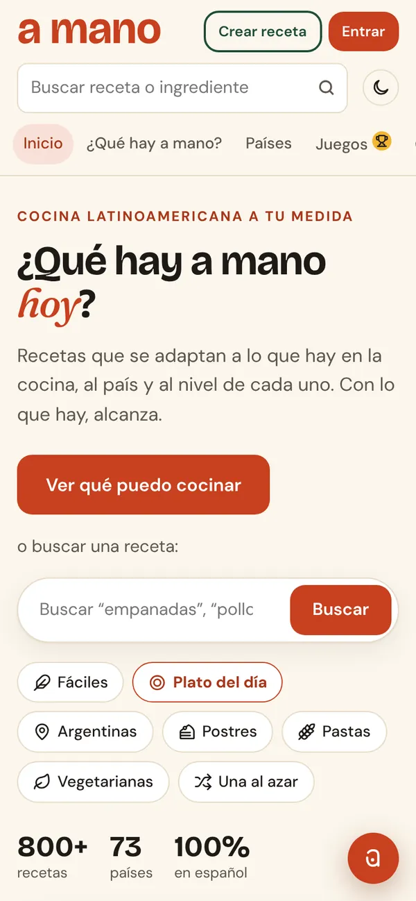

A Mano
Cocina latinoamericana que se adapta a lo que tenés en la heladera, a tu país y a tu nivel. Con lo que hay, alcanza.

- Recetas en español
- 800+
- Países
- 73
- Medallas
- 21
Empezó como un recetario y se convirtió en un producto con marca propia, dominio y comunidad. Lo más interesante está en los detalles:
- Manitas, un asistente de cocina con IA (Google Gemini) que conoce la receta abierta y responde “no tengo…”, “somos 2” o “sin horno” con reemplazos. Corre en una función del servidor, así la clave nunca llega al navegador, y tiene límite diario por persona.
- Catálogo traducido: las 791 recetas de TheMealDB pasadas al español con un script propio, más las de la casa y las que sube la comunidad.
- Modo cocina para ir tildando ingredientes y pasos, con temporizadores que salen solos de frases como “hornear 20 minutos”.
- Cuentas y recetas propias con foto (se achica en el celular antes de subirla), juegos diarios, medallas y un torneo con premio.
- Publicación automática en Instagram a partir de un calendario de contenido.
- JavaScript sin build
- Supabase
- Vercel Functions
- Gemini API
- Python